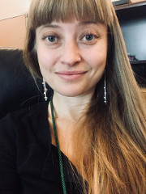

Originally from Northern California, Allison has spent the better part of the past decade living and writing in the Southwest. She holds an Bachelor’s Degree in Literature and Creative Writing from Prescott College and an MFA in Fiction from New Mexico State University. She has 6 years of experience working as an editor in the publishing world, 3 years of experience teaching Creative Writing at the collegiate level, and 4 years of experience tutoring English and instructing college courses in Critical Writing and Composition. She currently resides in Tucson, Arizona, where she is working outside of academia to improve education and employment systems for opportunity youth in Pima County.
Story collection, Be a Woman, judged by Kevin McIlvoy, 2017
Manuscript excerpt, There is the Day, Writing By Writers, 2016
Nonfiction Prose, “Sometimes a Tattoo,” 2015
Mt. Blanc Writing Workshop, 2015
Fiction, “Be a Woman,” 2014
Butler University, 2013-2014
Prescott College, 2010-2011
Virginia Woolf writes “…that we write, not with the fingers, but with the whole person.” She means that writing is more than just a verb; it is a whole-person process, a dynamic reckoning of all the things that make us, as persons, whole. And if we write with the whole person, with our whole messy knowledge-amalgamated interdisciplinary selves, then surely we ought to teach writing with the same wholeness. Teaching, like everything we do, from the mundane to the grandiose, is an historical act—one that does not forge clear boundaries between stratums of knowledge. To realize and appreciate and engage with this is the underlying principle in my teaching philosophy.